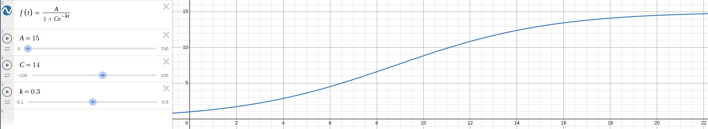

Scroll Wheel Accelerator: Building a Custom Input Daemon
From kernel drivers to logistic curves - building a custom scroll acceleration daemon

The Problem: Smart Mouse, Dumb Firmware
I recently bought an overpriced mouse for its "smart" scroll wheel. It's supposed to figure out if I need precise scrolling or quick navigation through lengthy documentation and code. Well, let's just say my preferences did not align with the firmware engineers' vision. The acceleration was either too aggressive or too conservative, never hitting that sweet spot.
So I decided to take matters into my own hands and build a custom scroll acceleration daemon.
Understanding the Input Pipeline
First, I needed to understand how mouse input flows through the Linux system. The pipeline looks like this:
Mouse Hardware → Kernel Driver (HID) → Kernel Subsystem (evdev) → Userspace Driver (libinput) → Xorg Server → i3 Window Manager → Focused Application
Let me trace through the actual devices on my system:
$ ls -l /dev/input/by-id/
total 0
lrwxrwxrwx 1 root root 9 2025-10-18 14:39 usb-Keychron_Keychron_K2-event-if01 -> ../event9
lrwxrwxrwx 1 root root 9 2025-10-18 14:39 usb-Keychron_Keychron_K2-event-kbd -> ../event8
lrwxrwxrwx 1 root root 9 2025-10-18 14:39 usb-Razer_Razer_Basilisk_V3_Pro_000000000000-event-if01 -> ../event6
lrwxrwxrwx 1 root root 9 2025-10-18 14:39 usb-Razer_Razer_Basilisk_V3_Pro_000000000000-event-mouse -> ../event3
lrwxrwxrwx 1 root root 9 2025-10-18 14:39 usb-Razer_Razer_Basilisk_V3_Pro_000000000000-if01-event-kbd -> ../event4
lrwxrwxrwx 1 root root 9 2025-10-18 14:39 usb-Razer_Razer_Basilisk_V3_Pro_000000000000-if01-event-mouse -> ../event5
lrwxrwxrwx 1 root root 9 2025-10-18 14:39 usb-Razer_Razer_Basilisk_V3_Pro_000000000000-if01-mouse -> ../mouse1
lrwxrwxrwx 1 root root 9 2025-10-18 14:39 usb-Razer_Razer_Basilisk_V3_Pro_000000000000-if02-event-kbd -> ../event7
lrwxrwxrwx 1 root root 9 2025-10-18 14:39 usb-Razer_Razer_Basilisk_V3_Pro_000000000000-mouse -> ../mouse0
My Razer mouse shows up as /dev/input/event3. Time to examine the raw events.
Raw Kernel Events
Using evtest to examine the raw events from the kernel:
$ sudo evtest /dev/input/event3
Event: time 1760892257.371629, type 2 (EV_REL), code 11 (REL_WHEEL_HI_RES), value -120
Event: time 1760892257.371629, -------------- SYN_REPORT ------------
Event: time 1760892257.375613, type 2 (EV_REL), code 8 (REL_WHEEL), value -1
Event: time 1760892257.375613, type 2 (EV_REL), code 11 (REL_WHEEL_HI_RES), value -120
Event: time 1760892257.375613, type 2 (EV_REL), code 1 (REL_Y), value -1
Event: time 1760892257.375613, -------------- SYN_REPORT ------------
Event: time 1760892257.376567, type 2 (EV_REL), code 0 (REL_X), value 1
Event: time 1760892257.376567, -------------- SYN_REPORT ------------
Event: time 1760892257.379603, type 2 (EV_REL), code 8 (REL_WHEEL), value -1
Event: time 1760892257.379603, type 2 (EV_REL), code 11 (REL_WHEEL_HI_RES), value -120
Event: time 1760892257.379603, type 2 (EV_REL), code 1 (REL_Y), value -1
Event: time 1760892257.379603, -------------- SYN_REPORT ------------
Event: time 1760892257.383656, type 2 (EV_REL), code 8 (REL_WHEEL), value -1
Event: time 1760892257.383656, type 2 (EV_REL), code 11 (REL_WHEEL_HI_RES), value -120
Event: time 1760892257.383656, type 2 (EV_REL), code 0 (REL_X), value 1
Event: time 1760892257.383656, -------------- SYN_REPORT ------------
Event: time 1760892257.386613, type 2 (EV_REL), code 1 (REL_Y), value -1
Event: time 1760892257.386613, -------------- SYN_REPORT ------------
Event: time 1760892257.387677, type 2 (EV_REL), code 8 (REL_WHEEL), value -1
Event: time 1760892257.387677, type 2 (EV_REL), code 11 (REL_WHEEL_HI_RES), value -120
The raw events from the kernel are very basic. libinput interprets them, handles device quirks, and adds features like pointer acceleration and scroll speed adjustments.
Processed Events via libinput
$ sudo libinput debug-events /dev/input/event3
event3 POINTER_SCROLL_WHEEL +15.085s vert 15.00/120.0* horiz 0.00/0.0 (wheel)
event3 POINTER_SCROLL_WHEEL +15.095s vert 15.00/120.0* horiz 0.00/0.0 (wheel)
event3 POINTER_SCROLL_WHEEL +15.105s vert 15.00/120.0* horiz 0.00/0.0 (wheel)
event3 POINTER_SCROLL_WHEEL +15.115s vert 15.00/120.0* horiz 0.00/0.0 (wheel)
event3 POINTER_SCROLL_WHEEL +15.125s vert 15.00/120.0* horiz 0.00/0.0 (wheel)
event3 POINTER_SCROLL_WHEEL +15.135s vert 15.00/120.0* horiz 0.00/0.0 (wheel)
event3 POINTER_SCROLL_WHEEL +15.145s vert 15.00/120.0* horiz 0.00/0.0 (wheel)
event3 POINTER_SCROLL_WHEEL +15.155s vert 15.00/120.0* horiz 0.00/0.0 (wheel)
event3 POINTER_SCROLL_WHEEL +15.165s vert 15.00/120.0* horiz 0.00/0.0 (wheel)
[ 24.626] (II) Using input driver 'libinput' for 'Razer Razer Basilisk V3 Pro'
The Xorg server recognizes the mouse and assigns the xf86-input-libinput driver to handle it.
Choosing the Right Approach
One approach was to hack the kernel driver. I deal with kernel space and below for a living, and while I understand the power available there, it's most likely overkill. Plus, if something can be done at a higher exception level, I would prefer that any day.
Chosen Approach: The evdev/uinput Userspace Daemon
evdev -> process -> uinput
This is the clean, modern, and display-server-agnostic way to handle input transformation. The daemon acts as a man-in-the-middle for mouse events.
How It Works
Create a Virtual Mouse: Using the kernel's
uinputmodule, the daemon creates a new virtual mouse device (e.g.,/dev/input/eventX). This virtual device looks like real hardware to the rest of the system (libinput, Xorg, etc.).Grab the Physical Mouse: The daemon finds the real mouse device (
/dev/input/event3) and "grabs" it. This gives exclusive access, preventing libinput and Xorg from seeing raw events directly—crucial for avoiding double-inputs.The Main Loop (Read, Process, Write):
- Continuously read raw evdev events from the physical mouse
- Pass through mouse clicks and movements unchanged
- Apply custom acceleration logic to
REL_WHEELevents - Buffer events, track speed, and write modified events to the virtual mouse
The System Uses the Virtual Mouse: libinput and Xorg automatically detect the new virtual mouse and use it for cursor control, completely unaware of the interception and modification.
Implementation: Basic Pass-Through Daemon
I used the Rust evdev crate to build a basic pass-through daemon to understand the flow.
Understanding Scroll Events
The implementation required batching events properly. Instead of emitting events one by one, I collect all events from a single fetch_events() call and emit them together as a batch. This ensures that related events (like REL_WHEEL and REL_WHEEL_HI_RES) are sent together.
Here's what the scroll events look like:
[2025-10-22T06:30:43Z INFO anxious_scroll_daemon] Event: InputEvent { time: SystemTime { tv_sec: 0, tv_nsec: 0 }, type: RELATIVE, code: REL_WHEEL, value: -1 }
[2025-10-22T06:30:43Z INFO anxious_scroll_daemon] Event: InputEvent { time: SystemTime { tv_sec: 0, tv_nsec: 0 }, type: RELATIVE, code: REL_WHEEL_HI_RES, value: -120 }
[2025-10-22T06:30:43Z INFO anxious_scroll_daemon] Event: InputEvent { time: SystemTime { tv_sec: 1761114643, tv_nsec: 974324000 }, type: SYNCHRONIZATION, code: SYN_REPORT, value: 0 }
[2025-10-22T06:30:43Z INFO anxious_scroll_daemon] --------------------------------
Both REL_WHEEL_HI_RES and REL_WHEEL are sent, followed by a SYN_REPORT. According to the Linux kernel documentation:
REL_WHEEL, REL_HWHEEL:
These codes are used for vertical and horizontal scroll wheels, respectively. The value is the number of detents moved on the wheel, the physical size of which varies by device. For high-resolution wheels this may be an approximation based on the high-resolution scroll events. These event codes are legacy codes and REL_WHEEL_HI_RES and REL_HWHEEL_HI_RES should be preferred where available.
REL_WHEEL_HI_RES, REL_HWHEEL_HI_RES: High-resolution scroll wheel data. The accumulated value 120 represents movement by one detent. For devices that do not provide high-resolution scrolling, the value is always a multiple of 120. For devices with high-resolution scrolling, the value may be a fraction of 120.
If a vertical scroll wheel supports high-resolution scrolling, this code will be emitted in addition to REL_WHEEL or REL_HWHEEL. The REL_WHEEL and REL_HWHEEL may be an approximation based on the high-resolution scroll events.
SYN_REPORT:
Used to synchronize and separate events into packets of input data changes occurring at the same moment in time. For example, motion of a mouse may set the REL_X and REL_Y values for one motion, then emit a SYN_REPORT.
Why Both Events?
My mouse is using the standard HID driver. Let me examine the kernel source:
static void hidinput_handle_scroll(struct hid_usage *usage,
struct input_dev *input,
__s32 value)
{
int code;
int hi_res, lo_res;
if (value == 0)
return;
if (usage->code == REL_WHEEL_HI_RES)
code = REL_WHEEL;
else
code = REL_HWHEEL;
/*
* Windows reports one wheel click as value 120. Where a high-res
* scroll wheel is present, a fraction of 120 is reported instead.
* Our REL_WHEEL_HI_RES axis does the same because all HW must
* adhere to the 120 expectation.
*/
hi_res = value * 120/usage->resolution_multiplier;
usage->wheel_accumulated += hi_res;
lo_res = usage->wheel_accumulated/120;
if (lo_res)
usage->wheel_accumulated -= lo_res * 120;
input_event(input, EV_REL, code, lo_res);
input_event(input, EV_REL, usage->code, hi_res);
}
That's interesting! The driver accumulates high-resolution values in usage->wheel_accumulated and then calculates a low-resolution value (lo_res) by dividing the accumulated value by 120.
This design allows applications to choose between low-res or hi-res based on their use case. The kernel provides both for maximum compatibility.
Decision: I'll work with the high-resolution values for more precise acceleration control. At least all my applications were working fine capturing just the acceleration control for now!
Now that I understood the event structure, it was time to figure out how to actually transform these values.
Designing the Acceleration Function
Now for the fun part: choosing the transformation function. What do I want?
Requirements:
- When scrolling slowly, sensitivity should be high (scroll should be slow) for precision
- As scrolling speed increases, sensitivity should dynamically decrease to enable fast navigation
- Smooth, natural feeling acceleration curve
I initially experimented with linear curves, but they felt too abrupt. I'm a sucker for smooth curves—"A curve is said to be smooth if it has no singular points, in other words if it has a (unique) tangent at all points."
The Logistic Model
I chose the logistic model because it tapers off naturally and I can easily control the ramp-up. The basic idea is inspired by Quake Live acceleration, where faster scrolling leads to higher acceleration multipliers. Instead of piecewise ramp-up and ramp-down functions, I used a smooth sigmoid curve.

The daemon uses a logistic function for smooth, natural acceleration:
f(velocity) = max_sensitivity / (1 + C * e^(-ramp_rate * velocity))
To achieve the desired behavior at zero velocity, we set:
C = (max_sensitivity / base_sensitivity) - 1
Parameters:
base_sensitivity: Starting sensitivity (default: 1.0)max_sensitivity: Maximum sensitivity (default: 15.0)ramp_rate: How quickly to accelerate (default: 0.3)
I quickly implemented this, and test it out and it felt great, and I was very satisfied with it. The scroll acceleration now feels natural and responsive, providing precise control for small movements while enabling rapid navigation through long documents.
But there's more things to do!
Future Work
While the current implementation works well for my needs, there's somethings that need to done yet:
- Benchmarking: Measure the daemon's performance impact and optimize for minimal latency
- Performance optimization: Hyperfocus on reducing event processing overhead
- Packaging: Create a proper systemd service and configuration management
- Advanced features: Add per-application acceleration profiles and gesture recognition
- Cross-platform support: Extend to other input systems beyond Linux evdev
The journey from frustrated user to custom input daemon was both educational and satisfying. Sometimes the best solution is the one you build yourself!